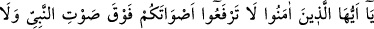
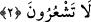

geçmektir. Uyku ve uyanıklık arasında âyetle alâkalı olarak bu mânâ bana ilhâm olundu.
Allah en doğrusunu bilir.
Ebu’l-Leys tefsirinde der ki: Âyette Cenâb-ı Hakk’ın kullarına olan merhametinin
beyânı vardır. Çünkü O (c.c.), kulların mâsiyetine rağmen onları “müminler” diye
isimlendirmiş ve “Ey iman edenler!” şeklinde hitap edip “Ey isyân edenler!”
dememiştir. Bu, medih ifâde eden bir nidâdır.
Yine âyette ilhâm ve vesvese arasındaki farkı bilmeden kendi aklınca hüküm verip
maksadı riyâ ve süm’a olduğu hâlde “verdiğim bu hüküm haktır, ona sarılın” diyen
kimseye de bir tehdid vardır. Mü’min için gerekli olan şartlardan biri de kendi görüş,
akıl ve tercihini Hz. Peygamber (s.a.)’in ve şeyhinin görüşünden üstün görmemesidir.
Şeyhinin uygun gördüğü şeye teslim olmalı; onun hizmeti ve sohbetinde edebi muhâfaza
etmelidir. Mürîdin edebinden biri de şeyhinin huzûrunda konuşmamaktır. Bu, onun,
büyüklerin gözünden düşmesine yol açar.
Sehl der ki: O söylemeden önce siz söylemeyin. Söylediğinde pür dikkat dinleyerek
teslim olun. Onun hakkına riayetsizlik ve ona hürmetsizlikten Allah’a sığının. Allah
dediklerinizi işiten, yaptıklarınızı bilendir.
Bazıları da şöyle der: Onun makamının ötesinde bir makâma tâlip olmayın. Kimse ona
denk olamaz; hatta yaklaşamaz bile! Onun gözü hayâdan, kulağı hikmetten, dili senâ ve
övgüden, gönlü rahmetten, eli cömertlikten, saçları misk kokusundan idi.
Sabâ yeli senin anber gibi kokan zülfünün kokusunu yaydığında,
Dünyadaki bütün kokuların ve misklerin bir değeri kalmaz.”
2. Ey iman edenler! Seslerinizi Peygamber’in sesinin üstüne yükseltmeyin.
Birbirinize bağırdığınız gibi, Peygamber’e yüksek sesle bağırmayın; yoksa siz
farkına varmadan amelleriniz boşa gidiverir.
Söz ve fiille alâkalı olarak haddi aşma yasaklandıktan sonra Nebî (s.a.) huzûrunda
sözün keyfiyetiyle alâkalı yasaklamalara başlanılmıştır.
Ses, iki cismin çarpışmasından ortaya çıkan sıkıştırılmış havadır. İnsanın içinden tabiî
bir şekilde çıkan hava “nefes” diye isimlendirilir. İrâdî olarak çıkıp iki cismin
çarpışması yoluyla meydana gelen dalgalanmaya “ses” denir. İnsanın irâdesi sonucu
ortaya çıkan ses iki türlüdür. Biri elle çıkartılan ûd ve benzeri şeylerin sesi, diğeri ise
ağızdan çıkan sestir. Ağızdan çıkan da konuşma ve diğer sesler olarak iki kısımdır.